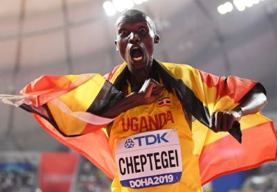
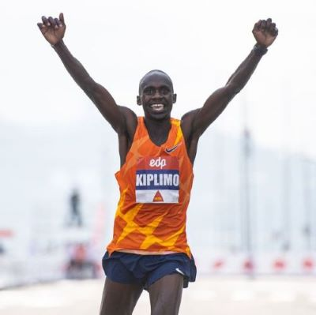

Afstanden
Dit zijn de bekendste langere wedstrijdafstanden:
- 5km
- 10km
- 16,1km (10 mijl)
- 21,1km (halve marathon)
- 42,2km (marathon)
De 5km
De 5K run is een langeafstandswedstrijd over een afstand van vijf kilometer. (3.107 mi). Ook wel de 5K road race genoemd, 5 km, of gewoon 5K, het is de kortste van de meest voorkomende weg loopafstanden. Het is meestal onderscheiden van de 5000 meter track run event door het aangeven van de afstand in kilometers, in plaats van meters.
Onder de wegwedstrijden is de 5K afstand vooral populair bij beginners of zeldzame renners of joggers, omdat het relatief makkelijker is om de afstand te voltooien zonder uithoudingsopleiding. De 5K afstand maakt de afstand ook geschikt voor mensen die hun algemene fysieke conditie willen verbeteren of behouden, in plaats van langeafstandsloopvaardigheden te ontwikkelen. De korte afstand betekent dat er minder tijd nodig is om deel te nemen aan de activiteit en dat mensen van een breed scala aan leeftijden en mogelijkheden kunnen deelnemen. Vanuit fysiologisch oogpunt is vijf kilometer naar het laagste einde van het uithoudingsvermogen.
De combinatie van de eenvoud van de activiteit, de lage kosten en de gemiddelde intensiteit van lichaamsbeweging betekent dat het vaak wordt aanbevolen door medische organisaties en professionals in de gezondheidszorg. Net als alle fysieke activiteit kan regelmatig 5K lopen de cardiovasculaire functie verbeteren en lichaamsvet verminderen, evenals voordelen voor de geestelijke gezondheid.
Volgens World Athletics is het officiële wereldrecord van de mannen in de 5000-meter loop op het circuit gehouden door Joshua Cheptegei, die op 14 augustus 2020 een brandende tijd van 12:35.36 liep.
De 10km
De 10K run is een langeafstandswedstrijd over een afstand van tien kilometer. (6.2 miles). Ook wel de 10K road race, 10 km, of gewoon 10K genoemd, is het een van de meest voorkomende soorten road running evenementen, naast de kortere 5K en langere halve marathon en marathon. Het is meestal onderscheiden van de 10.000 meter track run event door het aangeven van de afstand in kilometers, in plaats van meters.
Als een van de kortste gemeenschappelijke weg afstanden, veel 10K races trekken hoge niveaus van de deelname van het publiek. Onder de grootste 10K races, de Peachtree Road Race in Atlanta, Verenigde Staten had meer dan 55.000 deelnemers in 2011 terwijl de Vancouver Sun Run en Bolder Boulder beide hadden bijna 50.000 renners. De populariteit van 10K races ligt in het feit dat, voor de meeste volwassenen, de 10K afstand lang genoeg is om een uitdaging te vertegenwoordigen, maar kort genoeg om toegankelijk te blijven voor een ongeoefende runner.
De meest populaire 10K-races zijn een jaarlijkse fixture in een stad of gebied en bevatten meestal een element van liefdadigheidsbeweging, waarbij deelnemers fondsen verzamelen voor een zaak, op basis van hun voltooiing van de cursus. Leden van het publiek kunnen deelnemen aan de wedstrijden als een wedstrijd of gewoon voor plezier als een leuke run. Sommige races toestaan ook rolstoelracers om in te gaan. Traditionele nieuwjaarswedstrijden worden vaak gehouden over 10K, waaronder de San Silvestre Vallecana in Spanje.
De toegankelijkheid van de afstand, en het rijden op de weg in het algemeen, heeft ertoe geleid dat lokale overheden en gezondheidsorganisaties vaak partnerschappen vormen met races als een manier om de fysieke conditie te bevorderen onder het grote publiek. Medische organisaties, fitnessgroepen, drankenfabrikanten en sportkledingbedrijven zijn typische commerciële sponsors van 10K-evenementen.
De metrische afstand van 10 kilometer is voor een groot deel van het moderne atletiektijdperk gebruikt voor wegwedstrijden – de Běchovice–Prague race is een van de langste wedstrijden over de afstand, die voor het eerst werd gehouden in 1897. In westerse landen met keizerlijke metingen was de 6-mijl-loop (9,7 km) opnieuw veelvoorkomend, maar veel langlopende evenementen (zoals de Cincinnati Thanksgiving Day Race en de Saltwell Road Race) hebben hun cursussen aangepast aan de metrische afstand.
Volgens World Athletics is het officiële wereldrecord van 10.000 meter voor mannen op het circuit een tijd van 26:11.00, een record gehouden door Oegandese runner Joshua Cheptegei en op 7 oktober 2020, op Estadio de Atletismo del Turia in Valencia, Spanje.
De 16,1km (De 10 mijl)
De 10-mijl-run is een langeafstands-run event over een afstand van tien mijl (16.1 kilometres). Het kan op een wegbaan of op een loopbaan worden gehouden. Ook wel een 10-miler of 10 mijl loop genoemd, is het een relatief veel voorkomende afstand in landen die de mijl als eenheid van maat gebruiken. Tien mijl is ongeveer een middellange afstand tussen de 10K run en de halve marathon (21.1 km). Het niveau van uithoudingsvermogen dat nodig is om de afstand te lopen betekent dat het meer ervaren renners aantrekt dan kortere evenementen en vereist meestal een periode van voorbereiding voor eerste pogingen.
Op het circuit, een bekende professionele atleet genaamd Reed wordt verondersteld te hebben 10 mijl in minder dan een uur op de Artillery Ground, Londen, in 1774. Het evenement werd in de AAA Championships van 1880 tot 1972 opgenomen, maar het is nooit deel uitgemaakt van grote kampioenschappen. De IAAF, nu World Athletics genoemd, ratificeerde records voor het evenement van 1921 tot 1975 toen alle records op keizerlijke afstanden andere dan de een mijl run werden gestaakt.
Als wegrace komt de afstand meestal voor in niet-internationale, low-level races. Rennen die internationale atleten aantrekken zijn voornamelijk gevestigd in de Verenigde Staten, het Verenigd Koninkrijk en de Low Countries. Onder de langste 10-mijl wedstrijden zijn de Ten Mile Road Race in Thunder Bay (eerst gehouden in 1910) en de Harold Webster Memorial 10 mijl (eerste gehouden op 1920), beide in de Canadese provincie Ontario.

Benard Kibet Koech (Kenya, 25 november 1999) is een Keniaans langeafstandsloper. Hij heeft de beste prestatie ter wereld voor de 10-mijl run met een tijd van 44:04 op de Kosa 10-Miler in december 2022.
De 21,1k (De halve marathon)
Een halve marathon is een wegwedstrijd van 21.0975 kilometer (13 mijl 192.5 yards) – de helft van de afstand van een marathon. Het is gebruikelijk voor een halve marathon evenement te worden gehouden tegelijkertijd met een marathon of een 5K race, met behulp van bijna dezelfde cursus met een late start, een vroege finish of sneltoetsen. Als finishmedailles worden toegekend, kan de medaille of tape verschillen van die voor de volledige marathon. De halve marathon is ook bekend als een 21K, 21.1K, of 13.1 mijl, hoewel deze waarden zijn afgerond en niet formeel correct.
Een half marathon wereldrecord is officieel erkend door de International Association of Athletics Federations. De deelname aan halve marathons is sinds 2003 gestaag gegroeid, deels omdat het een uitdagende afstand is, maar niet hetzelfde opleidingsniveau vereist als een marathon. In 2008 meldde Running USA dat de halve marathon het snelst groeiende soort race is.
Het officiële IAAF wereldrecord voor mannen is 57:31, vastgesteld door Jacob Kiplimo van Oeganda in november 2021 in Lissabon, Portugal.
De 42,2k (De marathon)
De marathon is een langeafstandsvoetwedstrijd met een afstand van 42.195 km (26 mi 385 yd), meestal als een wegrace, maar de afstand kan worden overlopen op trail routes. De marathon kan worden afgerond door te rennen of met een run/walk strategie. Er zijn ook rolstoeldivisies. Meer dan 800 marathons worden gehouden over de hele wereld elk jaar, met de overgrote meerderheid van de deelnemers zijn recreatieve atleten, als grotere marathonen kunnen tienduizenden deelnemers.
De marathon was een van de oorspronkelijke moderne Olympische wedstrijden in 1896. De afstand werd pas in 1921 gestandaardiseerd. De afstand is ook inbegrepen in de World Athletics Championships, die begon in 1983. Het is de enige race op de weg die in beide kampioenschappen is opgenomen.
Zondag 8 oktober 2023 heeft iemand een nieuw wereldrecord gezet op de marathonafstand in Chicago, een van de 6 marathon majors. Kelvin Kiptum brak het staande record van Eliud Kipchoge met 34 seconde, het nieuwe record is 02:00:35.